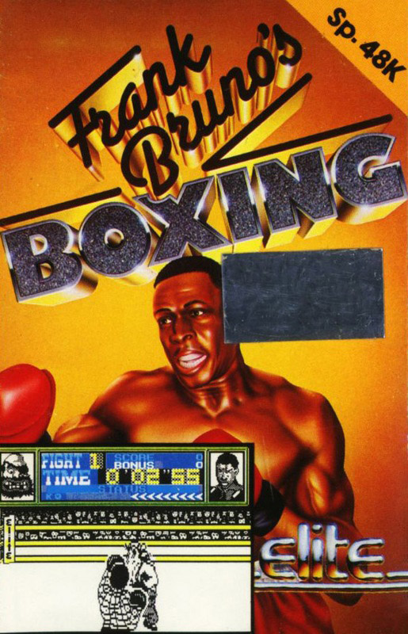
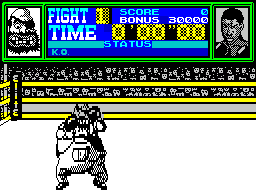

Frank Bruno's Boxing


{kind=link}

| Publisher: | Elite |
| Price: | £6.95 |
| Year: | 1985 |
| Source: | CRASH, Issue 19 |
It's almost as if the Elite team have been in hiding since their last effort 911 TS but they have in fact been very busy, putting together their contribution to the current fad for boxing games: Frank Bruno's Boxing. Like in Rocky, your view of the action is given from behind your character. The characters are smaller, but they are able to move around the ring to a degree. Unfortunately you can not control their footwork; this is a shame because this means that not one of the boxing simulations leaves any room for what has to be the smartest tactic — legging it.

The program allows for a wide variety of movements. Not only are left and right head punches allowed, but body punches too, and if you opponent is tottering on the brink you can deliver a right upper-cut or even a right hook just to finish him off. You can make you boxer dodge left or right, and should you suspect a biggy coming your way you can duck. If you don't fancy exposing yourself to violence by dodging, you are able to put up a guard although you will have to drop it to deliver the body punches or the upper cut. As the two combatants slug it out, they give the appearance of moving round the ring, but this movement is all controlled by the computer.
The type of blow you can deliver rather depends on the state of your opponent's health. At the top of the screen there are two pictures, Bruno on the right and the current contender on the left. Between the two mug shots a clock, two status bars and a knock-out meter are displayed. The status bars increase or decrease depending on the performance of the appropriate boxer: if a boxer catches a lot of punches then his status will decrease until he topples. If his status is low but he manages to turn the tide for a while and give the other guy some gyp, then as his opponent's bar diminishes his own will increase.
If a boxer takes a count because his status bar has reached zero, he will get up to find that his status bar has only partially recovered, thus reflecting his weaker condition_ The knock-out meter registers the number of successive blows dealt. If you rain down a hail of blows on your opponent, the arrows on his knock-out meter will build up with each punch until they reach the letters 'KO'. When they flash you can administer your final blows, the hook or upper cut. Should your opponent break your volley with just one return blow, then the arrows will rapidly diminish.
Thus there are two ways you can knock down your opponent: wear him down by reducing his status bar before he reduces yours; or administer a volley of punches culminating with a hook or cut as the knock-out blow. If you achieve three knock outs in under three minutes then you win that round, otherwise your opponent wins on points and you can only ask for a re match.
After winning your first fight you are given a code which will allow you to load, from tape, the next opponent. The fighting styles of the eight boxers are all different, and each one is harder to beat than his predecessor. The game keeps a record of the best knock-out times against each of the boxers and also a highscore table for the points scored. If you want to defer a bout to a later date, like after Star Trek, then keep a note of the code number. They aren't so easy to come by.
CRITICISM
'The main question we were asked at the ZX Microfair must have been "which do you prefer, Rocky or Frank Bruno?" Well now it's time to stop beating about the bush_ I prefer, as boxing simulations go, this one. I agree that the graphics in Rocky are a good deal better and clear er but the movement is so limit ed and repetitive as compared with Bruno. This shortcoming is made worse because Rocky has four different levels of skill but only the one character. For my part, I would rather leave boxing simulations alone, but I think it must be plain that Elite, for once, offers much more.'
'Frank's boxing game is the type of game that gradually grows on you. At first, using a fair few keys, things were difficult. Using the joystick alone, the game was unplayable. Eventually, using a combination of both joystick and keys, I began to make progress. The graphics are messy at times when the boxers cross, but they are generally OK.'
'In my opinion this is the best of the boxing games that I have seen this month, Even though its graphics are slightly confusing prefer them to Rocky's as there is more expression in the faces of the boxers. There are eight different characters in the game, each with their own personality. The first is a bully type who sticks his tongue out at you if you hit him while his guard is up. You can really get into playing this game as it seems very realistic in the way the boxers move and act. Generally this game is very good, although I can see myself getting bored with it as there are only eight characters to fight.'
COMMENTS
| Control keys: | 1/A guard up/down, I/O jab left/right. I/O with 1 body punch left/right, U/P dodge left/right, Q to duck, any on bottom row for knock-out |
| Joystick: | Kempston and Interface 2 |
| Keyboard play: | Easier than using a joystick |
| Use of colour: | Very little used |
| Graphics: | Lack clarity but have a lot of movement |
| Sound: | Pretty limited |
| Skill levels: | Eight |
| Lives: | Three per bout |
| Screens: | N/A |
| General rating: | Much more scope than the others. There, now we've said it! |
| Use of computer: | 74% |
| Graphics: | 83% |
| Playability: | 82% |
| Getting started: | 82% |
| Addictive qualities: | 79% |
| Value for money: | 87% |
| Overall: | 86% |